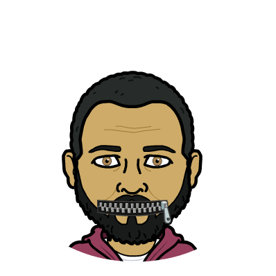
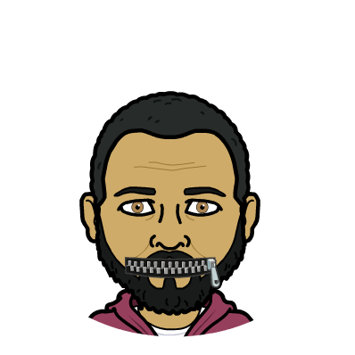

Keith W. Collins
The Man, The Myth, The Legend
 

I am a passionate, results driven professional Mental Health Specialist, with more than 13 years of experience transitioning to the field of technology to become a Full Stack Developer. I have developed skills in the mental health field that relate to the technology world including: Being able to successfully prioritize while wearing multiple hats to gauge consumer and organizational operation needs. Detailed project manager; organized and meets deadlines. Strong communicator and collaborator with all demographics, diverse traits and different working styles. Constantly striving to develop professionally by meeting and exceeding deliverables. Always open to professional feedback and seeking out practices and procedures that benefit all. I strive to acquire a strong technology administrative position within an influential organization/company to provide a structured commitment to customers and the organization’s overall growth both internally and externally; as part of a multi-disciplinary administrative team.